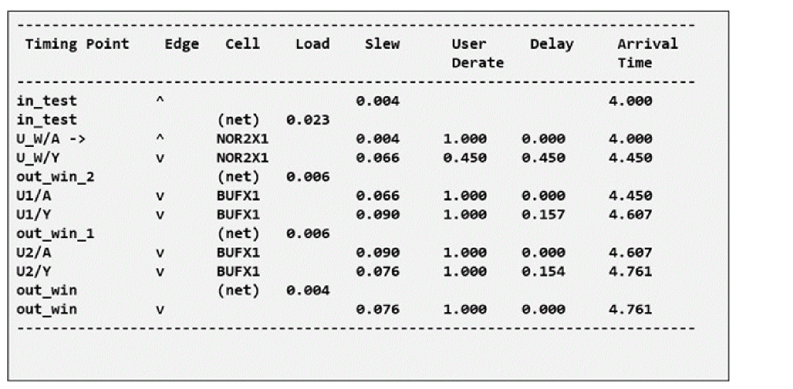

Reporting in SSI Mode
All the deratings applied via the set_timing_derate command are reflected in the “User Derate” column of the detailed report_timing report output.
In the example below, a nominal derate on early data paths is set as 0.90. An additional simultaneous switching derate of 0.50 is also specified. The User Derate column will show a cumulative derate of 0.45 if the simultaneous input switching condition has been met.
set_timing_derate 0.90 –early –data –fall
set_timing_derate 0.50 –early –data –fall \
–input_switching [get_lib_cells NOR2X1]

In the timing report shown above, the delay from U_W/A to U_W/Y is subject to SSI derating; it received the full, cumulative derate of 0.45.
Return to top